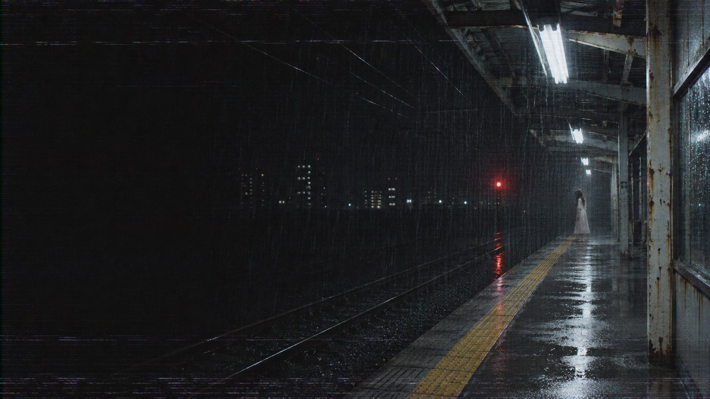
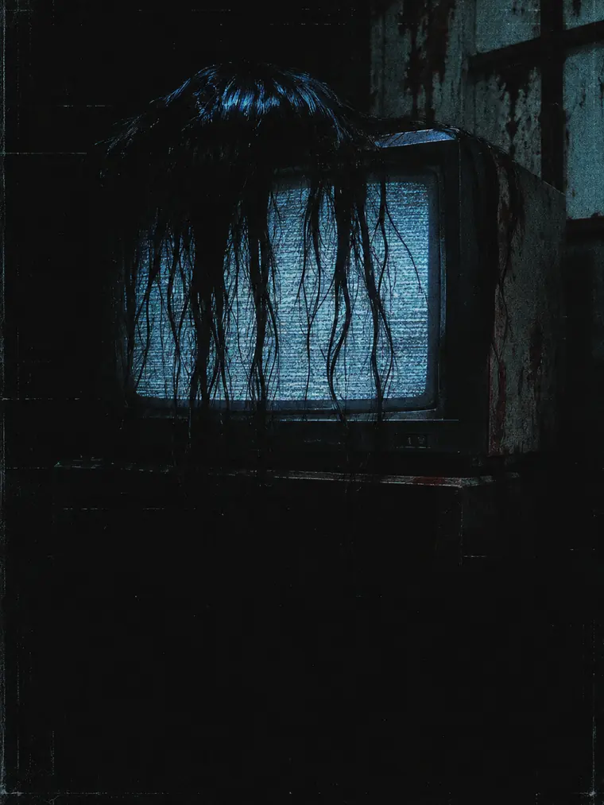
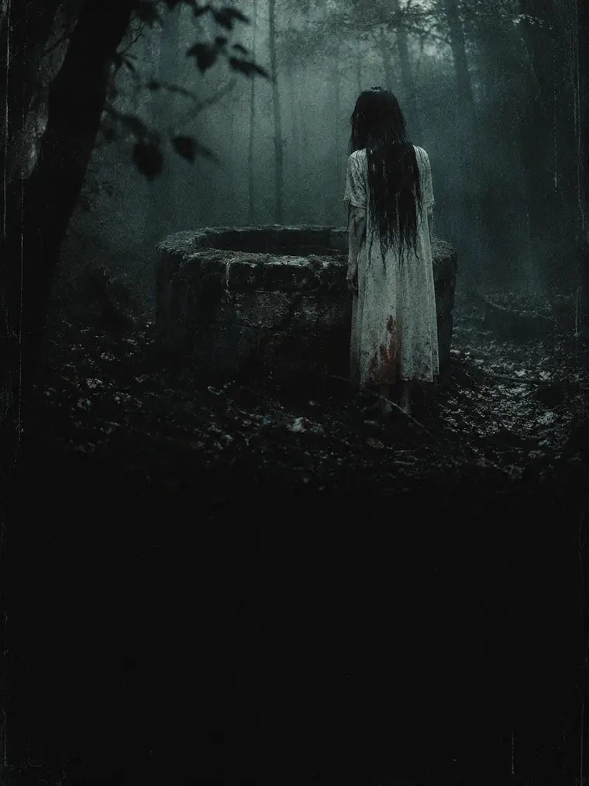
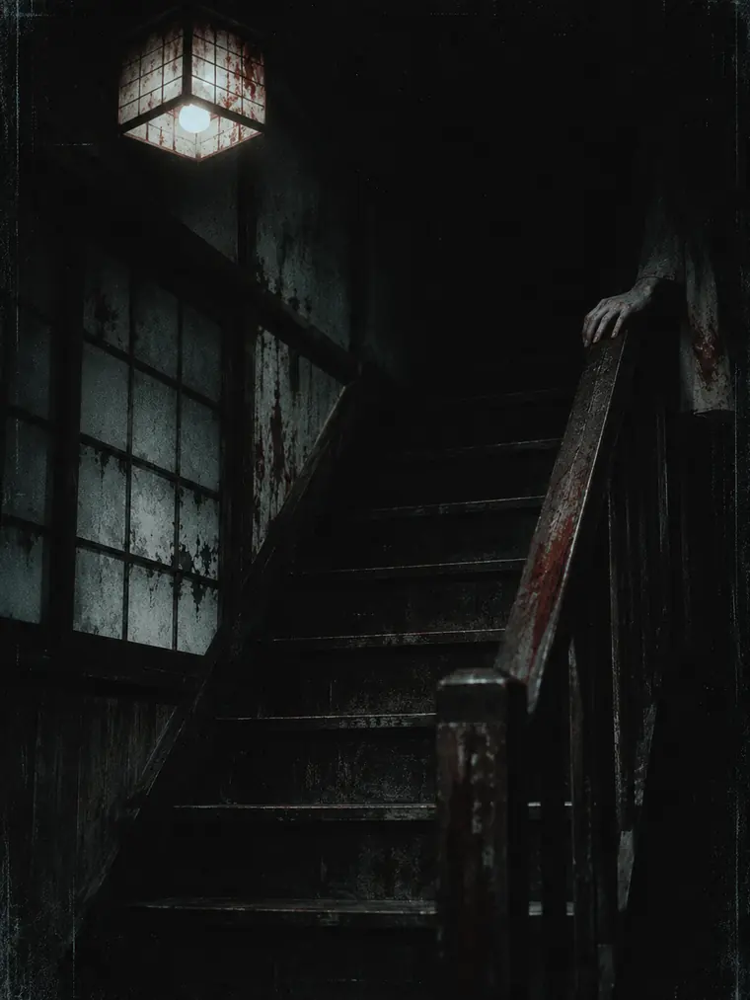
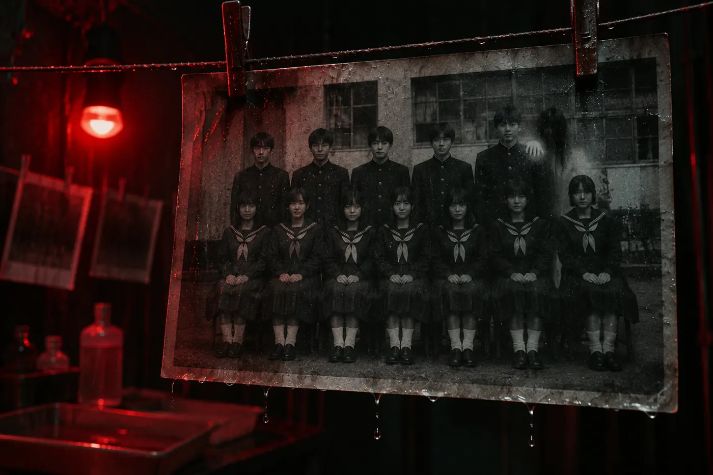
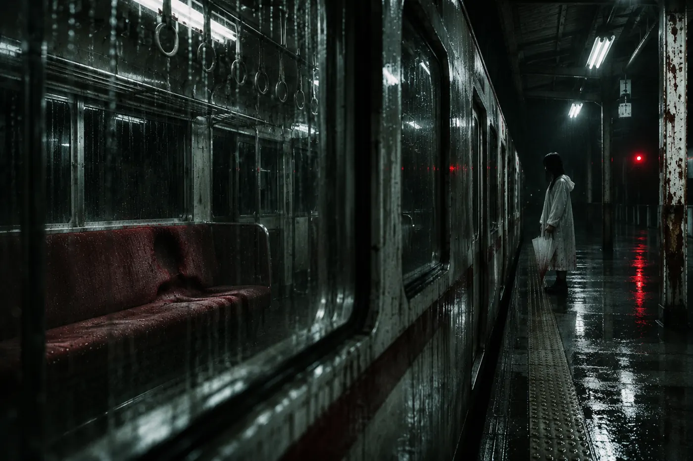

FILE 007 — JAPANESE HORROR CINEMA
J-HORROR MASTER ARCHIVE
A curated journey through Japanese horror cinema: kaidan roots, experimental nightmares, the J-horror boom and contemporary variations.






20FILM ENTRIES
EN / RUBilingual guide
HORROR AESTHETIC / INDEX